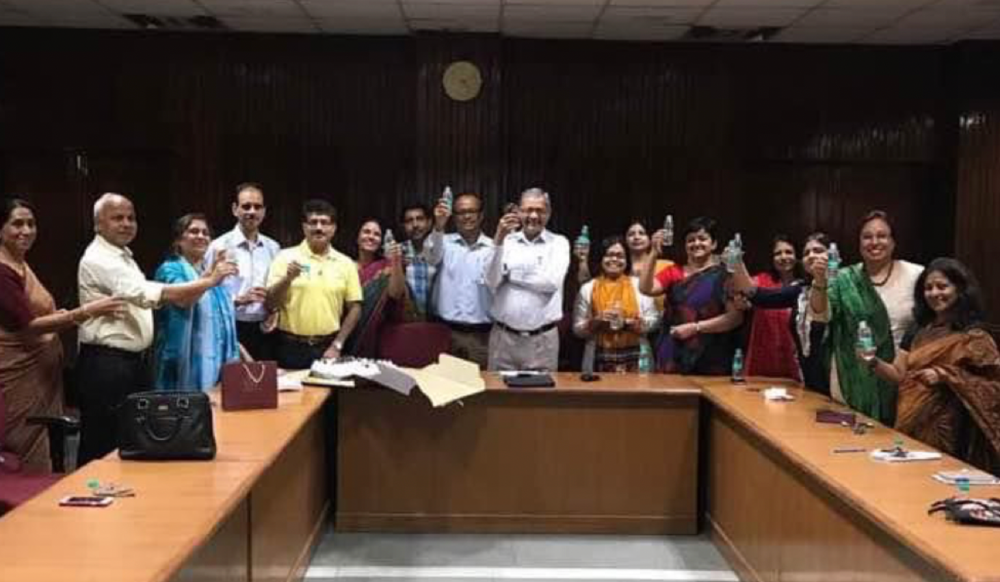
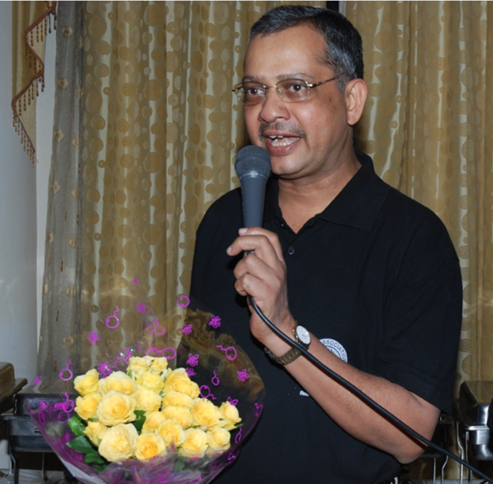

Faculty of Management Studies (FMS)
University of Delhi
40+ years of experience in teaching, research and academic leadership. Recognized for outstanding contributions in Computer Science and Engineering.
Explore ProfileYears of Experience
Research Papers
Research Projects
Awards & Honors
A brief introduction to my academic journey
I have been a member of the faculty at Faculty of Management Studies (FMS), University of Delhi since 1985. Previously, I worked at Management Development Institute, Gurgaon, and Tata Consultancy Services, New Delhi.
My passion lies in teaching, training, research, and consultancy in managerial efficiency improvement, process mapping, and information technology management. I have also had the privilege of holding key administrative roles including Head and Dean of FMS (2014-2017), Dean (Alumni), Dean (Examinations), and Dean (Re-engineering) at the University of Delhi.
Specialized areas of management, research, and teaching
in Management
Management of IS
Business Process Optimization
Strategic Management of Info Tech
Passionately involved in the activities of FMS Students and their post-FMS movements. Creator and Founder Secretary of the FMS Alumni Association®, Faculty of Management Studies, University of Delhi, a body of the old students of FMS.
A timeline of academic excellence and professional experience
Punjab University (Chandigarh)
University of Delhi (Delhi)
University of Delhi (Delhi)
Tata Consultancy Services (New Delhi)
Software and Management Consultancy
Faculty of Management Studies, University of Delhi
Teaching Faculty
Management Development Institute (Gurgaon)
Teaching Faculty
A journey of excellence and recognition
Awarded the prestigious IBM Faculty Award for research in BPR/BPM.
Held the positions of Head and Dean at the Faculty of Management Studies, University of Delhi.
Led critical assignments for the CBI and the Hon'ble Supreme Court of India.
Chairman of the Task Force on Re-engineering at DU. Also served as Dean (Alumni) and Dean (Examinations).
Moments from conferences, events and achievements

